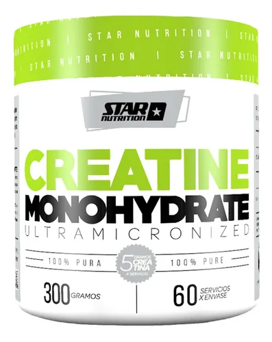
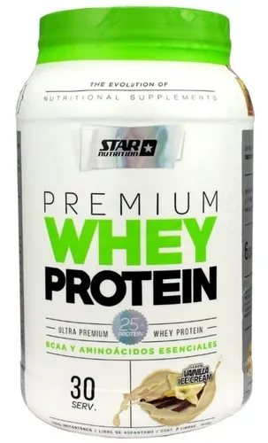

Como empezar?
Primero tienes que ver si hacer DEFICIT CALORICO, SUPERAVIT CALORICO o RECOMPOSICION CORPORAL
DEFICIT CALORICO
Un déficit calórico significa consumir menos calorías de las que el cuerpo gasta, por lo tanto, si tu idea es bajar de peso, esta es la opcion. Ten en cuenta de hacerlo corectamente para no perder masa muscular.
SUPERAVIT CALORICO
Un superavit calorico significa comer mas calorias de las que tu cuerpo gasta, por lo tanto, si tu idea es aumentar tu masa muscular o tu fuerza, esta es la opcion. Ten en cuenta que si tienes la posibilidad de hacerlo limpio ADELANTE, comer sano para ganar mas masa muscular y no grasa.
RECOMPOSICION CORPORAL
puede ser más efectivo centrarse en un objetivo específico para comenzar, ya sea la pérdida de grasa corporal o el aumento de masa muscular, según la valoración y los datos de los que se parta.
Ejercicios
¡¡¡Ahora les presentare ejercicios para los musculos principales o mas conocidos, haz click en la imagen y te redireccionara a un video explicativo de como hacer la tecnica correcta!!!
RECUERDEN HACER BIEN LA TECNICA SI NO, NO HABRA PROGRESOTREN SUPERIOR
Pecho

Espalda

Biceps

Triceps

Hombros

Antebrazos

TREN INFERIOR
Cuadriceps

Gemelos

Gluteos

Femorales

Suplementos
En cuanto a suplementos hay varias disponibilidades, pero las mas conocidas en cuanto a utilidad y beneficio son 2
CREATINA
Este suplemento se usa usualmente para MEJORAR EL RENDIMIENTO Y AUMENTAR LA MASA MUSCULAR, aunque tambien se usa para los calambres, fatiga, etc.
PROTEINA
Este suplemento se usa usualmente para ayudar a las personas que no ingieren una cantidad suficiente de proteínas en su dieta.